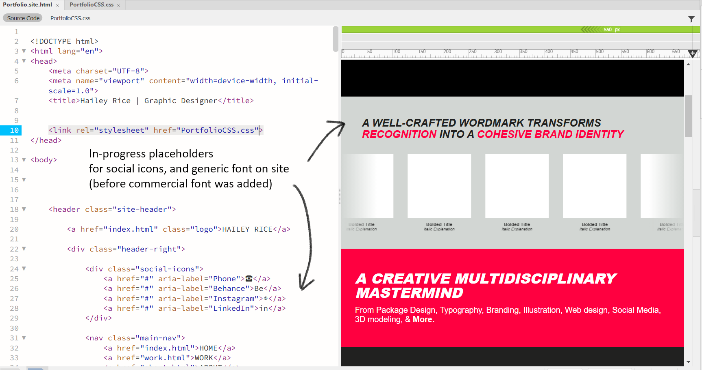
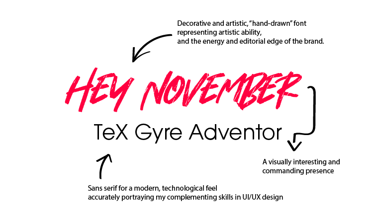
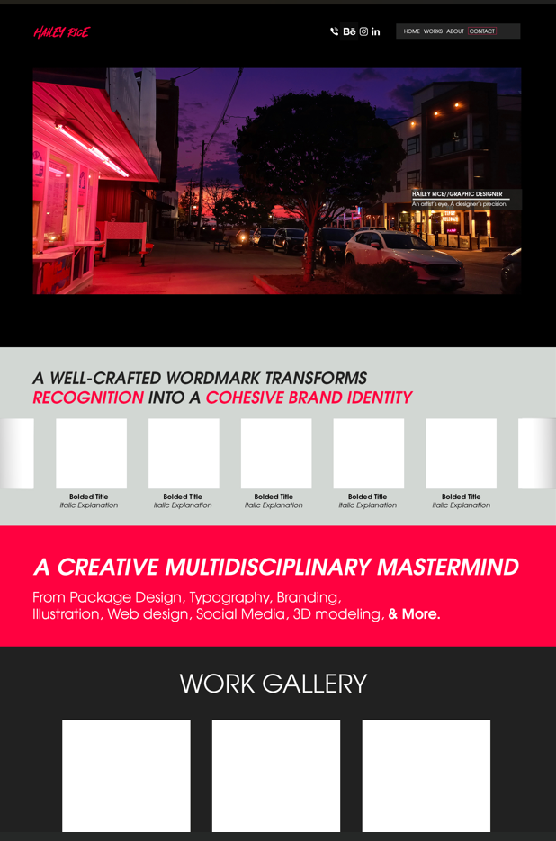
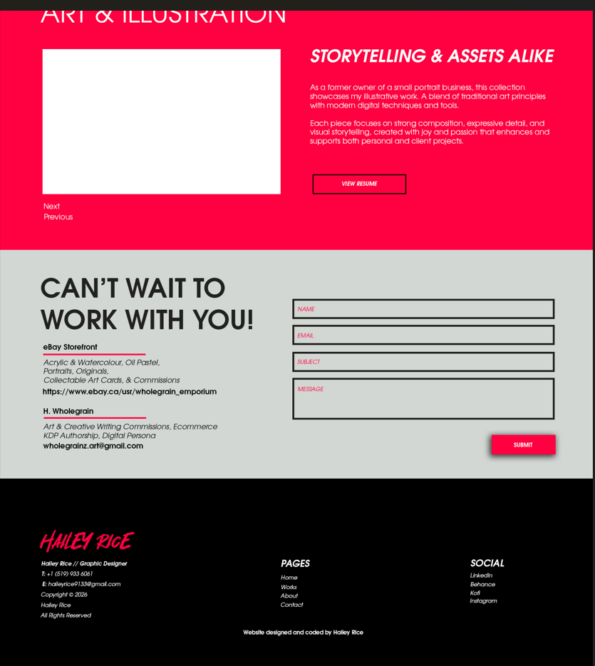
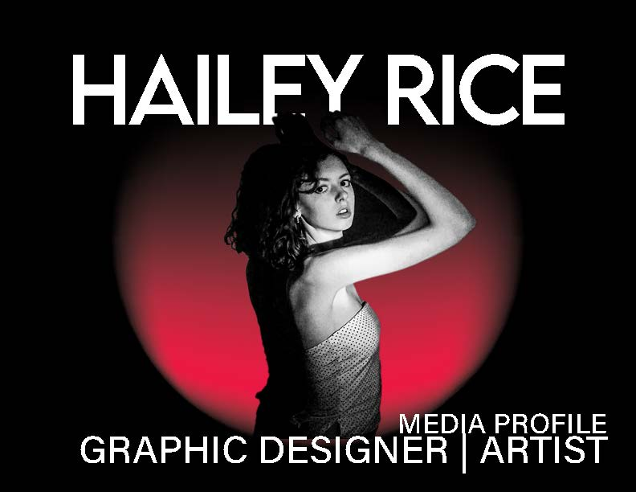
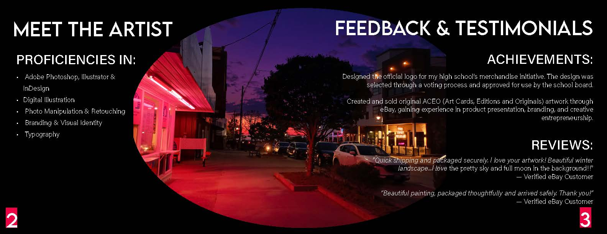
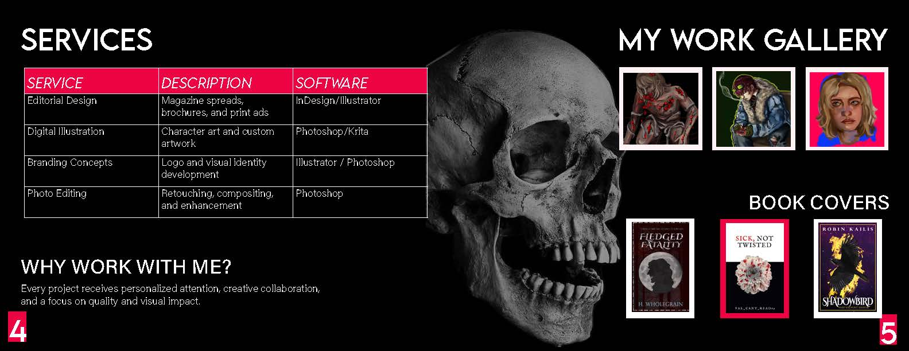
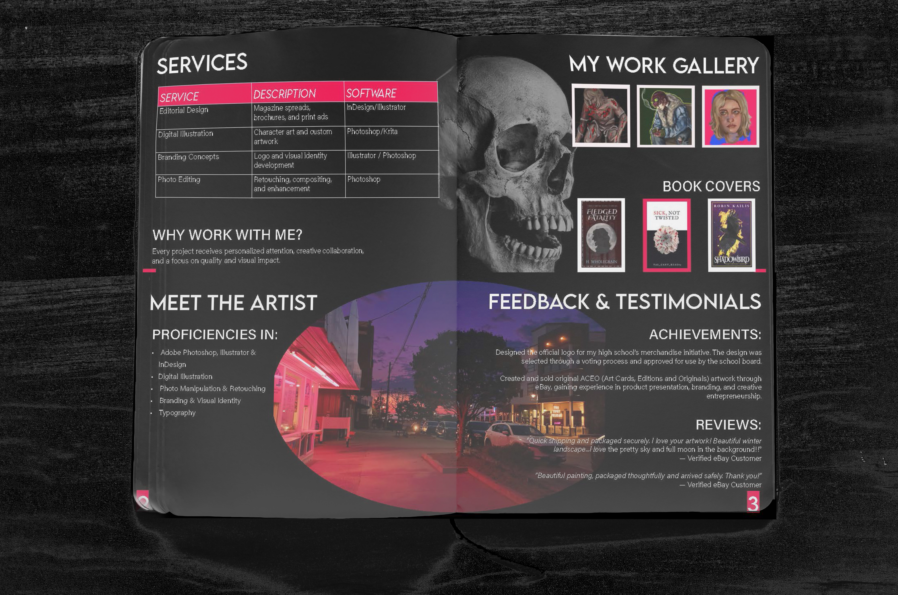

HAILEY RICE
SITE DESIGN
Brand Identity, Editorial Spread, UI/UX Website Design, Mobile App Design, Photo-Editing, Media Profile and Portfolio
When creating my brand, I chose a vibrant colour scheme featuring bright hot pink/red as the signature accent colour, paired with editorial black, white, and grey. This kept the brand focused and professional while allowing highlights of colour to shine through the portfolio and branding.
When designing the main wordmark for my design company, Hailey Rice, I decided to go with a handmade feel: a decorative font designed to look as though it was drawn with permanent marker. Paired with a sans-serif typeface, it accurately demonstrates both sides of my identity: UX/UI design, portrayed through a modern sans-serif font, and the artistic side of my brand, represented by the logo wordmark.
Photos featured in my portfolio were edited with masking layers to provide hot pink highlights and deep blacks. When I found myself unsatisfied with the templates Adobe Portfolio provided, I decided to take my skills and branding to the next level by creating a hand-coded portfolio website. I began by designing the homepage, a long, scrollable experience that acts as an appetizer to the otherwise immersive site. I then incorporated interactive features, such as my logo carousel using JavaScript and my art slideshow closer to the bottom of the page, complete with functioning overlays and buttons. I learned HTML and CSS in college as part of my certificate program; however, for some of the more advanced aspects of my portfolio, such as using GitHub and understanding static hosting, I turned to YouTube tutorials. Overall, the design process reflects my attitude toward design: adventurous and exciting!








